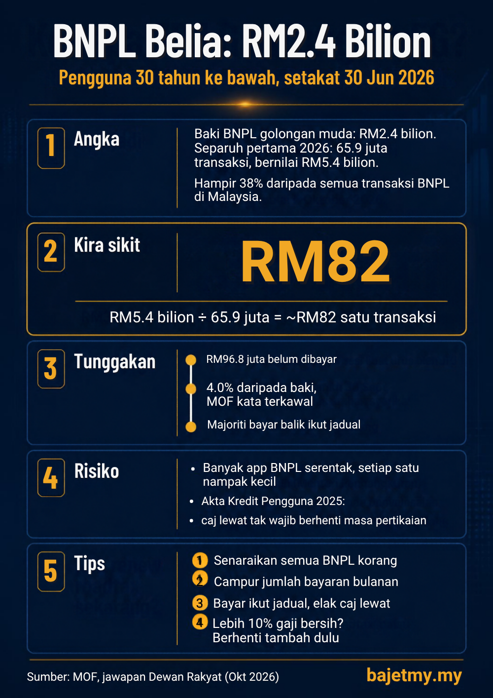

Menurut jawapan bertulis Kementerian Kewangan (MOF) di Dewan Rakyat, baki pembiayaan Beli Sekarang, Bayar Kemudian (BNPL) untuk pengguna berumur 30 tahun dan ke bawah mencecah RM2.4 bilion setakat 30 Jun 2026.

Angka utama
| Perkara | Angka |
|---|---|
| Baki BNPL pengguna 30 tahun ke bawah (30 Jun 2026) | RM2.4 bilion |
| Transaksi separuh pertama 2026 | 65.9 juta |
| Nilai transaksi separuh pertama 2026 | RM5.4 bilion |
| Bahagian daripada semua transaksi BNPL | 37.9% (bilangan), 36.7% (nilai) |
| Jumlah belum dibayar | RM96.8 juta (4.0% daripada baki) |
Kira sikit
RM5.4 bilion ÷ 65.9 juta transaksi = lebih kurang RM82 setiap transaksi.
Ini bukan pembelian besar seperti peti ais atau komputer riba. Purata RM82 menunjukkan BNPL banyak digunakan untuk perbelanjaan harian dan barang kecil yang dipecahkan menjadi ansuran.
Tbf: BNPL bukan semestinya buruk
Kadar tunggakan 4.0% bermaksud majoriti pengguna muda membayar balik ikut jadual, dan MOF menyifatkannya masih terkawal. Jika digunakan sekali-sekala untuk barang yang memang perlu dan dibayar tepat masa, BNPL tidak banyak berbeza dengan membayar secara berperingkat.
Di mana risikonya
- Banyak app serentak. Setiap pelan nampak kecil, tetapi bila dicampur, jumlah bayaran bulanan boleh jadi besar.
- Caj lewat semasa pertikaian. Menurut MOF, Akta Kredit Pengguna 2025 (Akta 873) tidak mewajibkan penyedia BNPL menghentikan tuntutan bayaran, caj lewat atau kutipan hutang secara automatik apabila sesuatu transaksi dipertikaikan. Pertikaian perlu disiasat dahulu.
Apa korang boleh buat
- Senaraikan semua pelan BNPL yang aktif.
- Campur jumlah bayaran bulanan.
- Jika jumlahnya melebihi kira-kira 10% gaji bersih, berhenti menambah pelan baru dahulu. (Ini panduan ringkas Bajet MY, bukan had rasmi.)
- Gunakan Kalkulator Bayar Hutang untuk merancang pelunasan.
Sumber
- Kementerian Kewangan: jawapan bertulis Dewan Rakyat, dilaporkan Utusan Malaysia (14 Oktober 2026)
- Akta Kredit Pengguna 2025 (Akta 873) dan Standard Pelakuan Suruhanjaya Kredit Pengguna